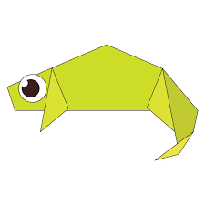

Orgami Design
About us
Follow me
INTRESTING FACTS ABOUT CAMEL
- Camel ears are furry.
- Camel can live so many days without water because of his big trunk.
- When they find water they drink water as much as possible.

INTRESTING FACTS ABOUT CHAMELEON
- THEY MAINLY CHANGE COLOR IN ORDER TO COMMUNICATE OR REGULATE BODY TEMPERATURE.
- THEIR FEET WORK LIKE SALAD TONGS.
- UNLIKE MANY LIZARDS, CHAMELEONS CAN'T REGROW THEIR TAILS.

INTRESTING FACTS ABOUT PEGION
INTRESTING FACTS ABOUT PANNDA
- They love to eat bamboo.
- Their eyes are different to normal bears.
- They spend a lot of their day eating.

INTRESTING FACTS ABOUT CICADA
- Cicadas are not locusts.
- Cicadas have one of the longest insect lifespans.
- Cicadas inundate forests as a survival mechanism.